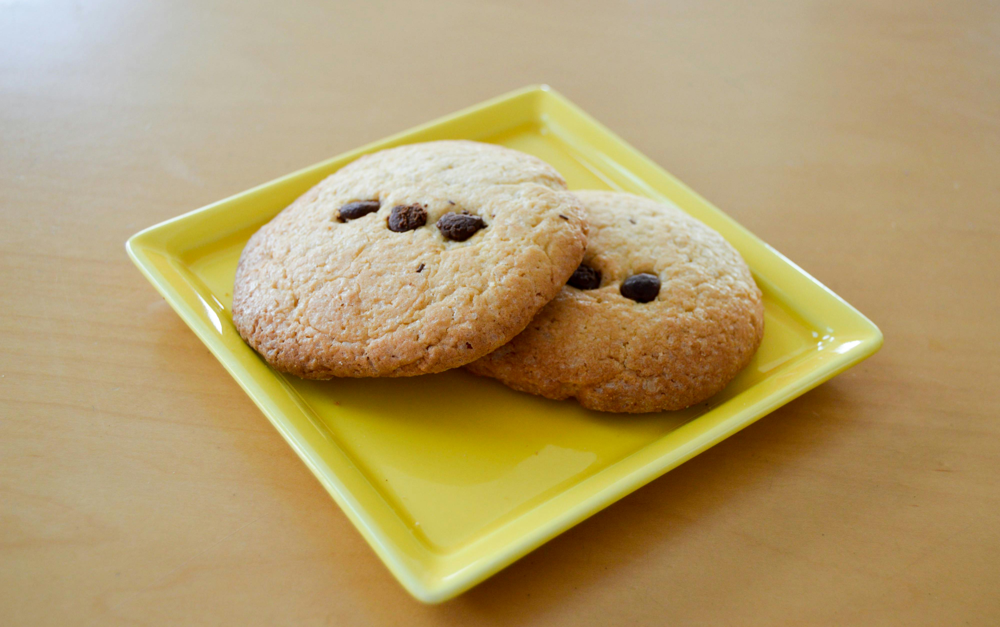

Butter Cookies Recipes
Back to Home

This simple
butter cookies
recipe can be used in a cookie press, made as a drop cookie, or shaped
into a roll and sliced. There is no special cookie recipe for a cookie
press — any stiff butter type of cookie can be used! Just be sure to chill
it thoroughly so it keeps its shape while baking.
Ingredients
- 1 cup butter
- 1 cup white sugar
- 1 large egg
- 2 teaspoons vanilla extract
- 2 1/2 cups all-purpose flour
- 1/2 teaspoon salt
Instructions
-
Beat butter and sugar together in a large bowl with an electric mixer
until light and fluffy. Beat in egg, then stir in the vanilla. Combine
flour and salt in a separate bowl; add to butter mixture and mix to form
a dough. Cover dough with plastic wrap and chill for at least one hour.
-
Preheat the oven to 400 degrees F (200 degrees C). Chill two cookie
sheets.
-
Transfer chilled dough to a cookie press; press out onto chilled cookie
sheets.
-
Bake in the preheated oven until lightly golden at the edges, about 8 to
10 minutes. Transfer cookies to wire racks to cool.